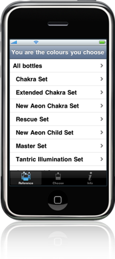
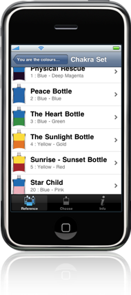
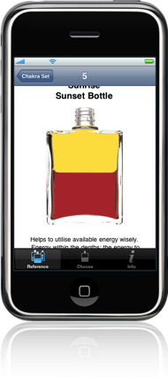
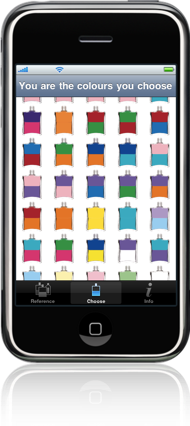
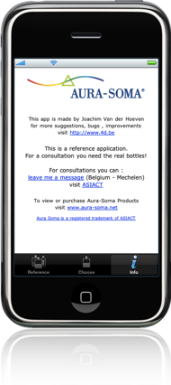
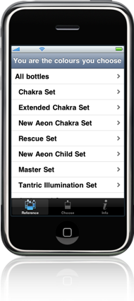
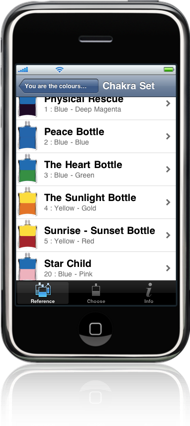
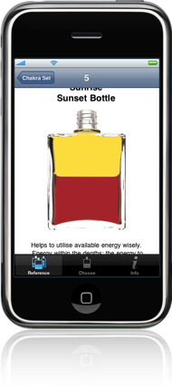
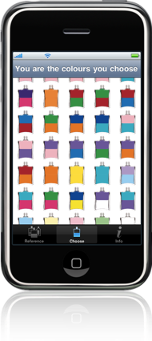
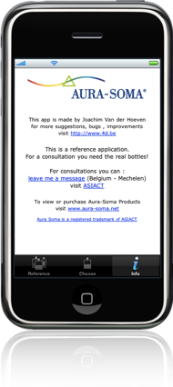

Aura Soma
A reference application to lookup Aura Soma Equilibrium Bottles.
Not approved because of too much marketing.
    
Open Source Libraries used :
A reference application to lookup Aura Soma Equilibrium Bottles.
Not approved because of too much marketing.
    
Open Source Libraries used :